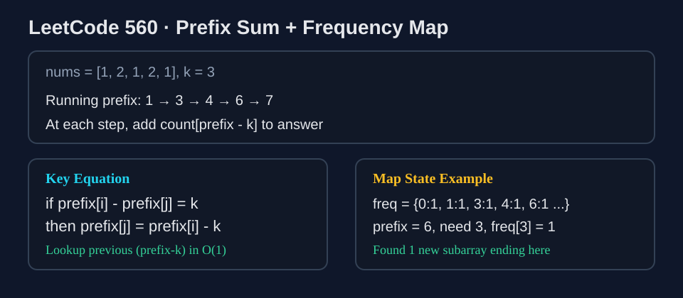

LeetCode 560: Subarray Sum Equals K (Prefix Sum + Hash Map)
LeetCode 560ArrayPrefix SumHash MapToday we solve LeetCode 560 - Subarray Sum Equals K, a classic problem that tests whether you can turn a quadratic scan into linear time using prefix sums.
Source: https://leetcode.com/problems/subarray-sum-equals-k/

English
Problem Summary
Given an integer array nums and an integer k, return the total number of contiguous subarrays whose sum equals k.
Key Insight
If prefix[i] is the sum of elements from index 0 to i, then for a subarray (j+1..i) to sum to k, we need:
prefix[i] - prefix[j] = k → prefix[j] = prefix[i] - k.
So while scanning once, if we know how many times each prefix sum has appeared, we can count valid subarrays ending at current index in O(1).
Brute Force and Why Insufficient
Brute force tries all subarray boundaries:
- Triple loop with direct sum: O(n^3).
- Two loops + running sum: O(n^2).
For large inputs, O(n^2) is too slow. We need one-pass linear processing.
Optimal Algorithm (Step-by-Step)
Use running prefix sum + frequency map:
1) Initialize a map freq with freq[0] = 1 (empty prefix).
2) Set prefix = 0, answer = 0.
3) For each number x in nums:
a) Update prefix += x.
b) Add freq[prefix - k] to answer (if exists).
c) Increment freq[prefix].
4) Return answer.
This works because each previously seen prefix equal to prefix-k defines one valid starting boundary.
Complexity Analysis
Time: O(n) — single pass, O(1) average map ops.
Space: O(n) — map may store up to n distinct prefix sums.
Common Pitfalls
- Forgetting freq[0] = 1, which misses subarrays starting from index 0.
- Updating freq[prefix] before querying freq[prefix-k] (wrong counting order).
- Using sliding window for this problem with negative numbers (not reliable).
- Confusing “count subarrays” with “find one subarray”.
Reference Implementations (Java / Go / C++ / Python / JavaScript)
class Solution {
public int subarraySum(int[] nums, int k) {
Map<Integer, Integer> freq = new HashMap<>();
freq.put(0, 1);
int prefix = 0;
int answer = 0;
for (int x : nums) {
prefix += x;
answer += freq.getOrDefault(prefix - k, 0);
freq.put(prefix, freq.getOrDefault(prefix, 0) + 1);
}
return answer;
}
}func subarraySum(nums []int, k int) int {
freq := map[int]int{0: 1}
prefix, answer := 0, 0
for _, x := range nums {
prefix += x
answer += freq[prefix-k]
freq[prefix]++
}
return answer
}class Solution {
public:
int subarraySum(vector<int>& nums, int k) {
unordered_map<int, int> freq;
freq[0] = 1;
int prefix = 0;
int answer = 0;
for (int x : nums) {
prefix += x;
if (freq.count(prefix - k)) {
answer += freq[prefix - k];
}
freq[prefix]++;
}
return answer;
}
};class Solution:
def subarraySum(self, nums: List[int], k: int) -> int:
freq = {0: 1}
prefix = 0
answer = 0
for x in nums:
prefix += x
answer += freq.get(prefix - k, 0)
freq[prefix] = freq.get(prefix, 0) + 1
return answer/**
* @param {number[]} nums
* @param {number} k
* @return {number}
*/
var subarraySum = function(nums, k) {
const freq = new Map();
freq.set(0, 1);
let prefix = 0;
let answer = 0;
for (const x of nums) {
prefix += x;
answer += freq.get(prefix - k) || 0;
freq.set(prefix, (freq.get(prefix) || 0) + 1);
}
return answer;
};中文
题目概述
给定整数数组 nums 和整数 k，返回和等于 k 的连续子数组数量。
核心思路
定义前缀和 prefix[i] 表示 0..i 的总和。若子数组 (j+1..i) 的和为 k，则有：
prefix[i] - prefix[j] = k，等价于 prefix[j] = prefix[i] - k。
也就是说，遍历到当前位置时，只要知道“之前出现过多少个 prefix-k”，就能立刻知道新增多少个合法子数组。
暴力解法与不足
暴力方式枚举所有区间：
- 三层循环直接求和：O(n^3)。
- 两层循环维护区间和：O(n^2)。
在 LeetCode 的数据范围下，O(n^2) 通常不够快，面试也更期待线性解法。
最优算法（步骤）
使用“前缀和 + 计数哈希表”：
1）初始化 freq[0] = 1，表示空前缀出现一次。
2）prefix = 0，answer = 0。
3）遍历每个元素 x：
a）prefix += x；
b）把 freq[prefix-k] 累加到 answer；
c）freq[prefix]++。
4）最终返回 answer。
复杂度分析
时间复杂度：O(n)（单次遍历，哈希操作均摊 O(1)）。
空间复杂度：O(n)（最坏存储 n 个不同前缀和）。
常见陷阱
- 忘记初始化 freq[0] = 1，导致漏掉从 0 开始的区间。
- 先更新 freq[prefix] 再查询 prefix-k，会导致计数错误。
- 误用滑动窗口（数组可能有负数，窗口不具备单调性）。
- 把“求数量”写成“找任意一个解”。
多语言参考实现（Java / Go / C++ / Python / JavaScript）
class Solution {
public int subarraySum(int[] nums, int k) {
Map<Integer, Integer> freq = new HashMap<>();
freq.put(0, 1);
int prefix = 0;
int answer = 0;
for (int x : nums) {
prefix += x;
answer += freq.getOrDefault(prefix - k, 0);
freq.put(prefix, freq.getOrDefault(prefix, 0) + 1);
}
return answer;
}
}func subarraySum(nums []int, k int) int {
freq := map[int]int{0: 1}
prefix, answer := 0, 0
for _, x := range nums {
prefix += x
answer += freq[prefix-k]
freq[prefix]++
}
return answer
}class Solution {
public:
int subarraySum(vector<int>& nums, int k) {
unordered_map<int, int> freq;
freq[0] = 1;
int prefix = 0;
int answer = 0;
for (int x : nums) {
prefix += x;
if (freq.count(prefix - k)) {
answer += freq[prefix - k];
}
freq[prefix]++;
}
return answer;
}
};class Solution:
def subarraySum(self, nums: List[int], k: int) -> int:
freq = {0: 1}
prefix = 0
answer = 0
for x in nums:
prefix += x
answer += freq.get(prefix - k, 0)
freq[prefix] = freq.get(prefix, 0) + 1
return answer/**
* @param {number[]} nums
* @param {number} k
* @return {number}
*/
var subarraySum = function(nums, k) {
const freq = new Map();
freq.set(0, 1);
let prefix = 0;
let answer = 0;
for (const x of nums) {
prefix += x;
answer += freq.get(prefix - k) || 0;
freq.set(prefix, (freq.get(prefix) || 0) + 1);
}
return answer;
};
Comments